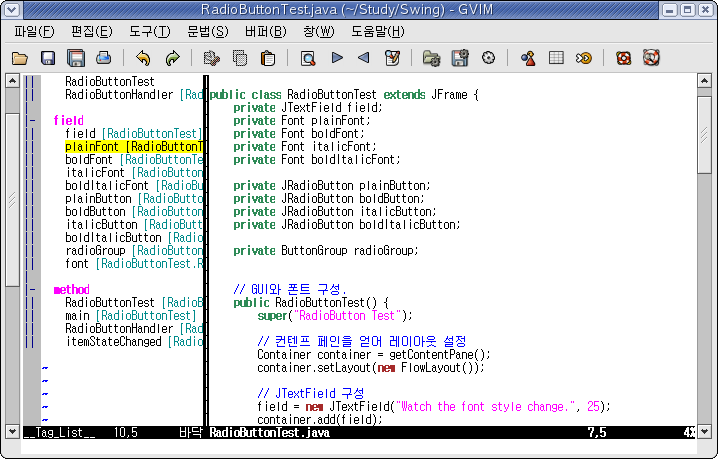
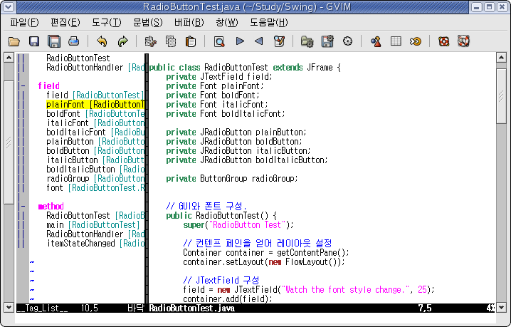

나는 웬만하면 Eclipse를 이용해서 프로그램을 짜지만, 아주 간단한 프로그램을 짜면서 이클립스를 구동시킨다는 것은 정말 시간 낭비이기 때문에, 그리고 API등을 익히기 위해 예제 프로그램을 짜보거나 할 경우에는 IDE를 사용하지 않고 에디터를 사용해서 API에 익숙해지자고 하는 나름대로의 원칙 때문에, 간혹 VIM을 이용해 프로그램을 짠다.~/.vim/myjava.vim
~/.vimrc
사용하기
~/.vim/myjava.vim 파일에 실제 Java를 위한 설정이 들어간다.
~/.vimrc 에서는 *.java 파일을 읽을 때 자동으로 myjava.vim을 읽어들이도록 한다.
"set sw=4 sts=4 ts=8 et" 이 줄의 역할은 들여쓰기를 4칸으로 하고 들여쓰기 문자는 탭이 아니라 네칸의 공백으로 지정한 것이다.
탭을 누르면 대신 공백 네개가 들어간다. 탭을 입력하고 싶다면 Ctrl-V Tab 을 누르면 된다.
공백 네칸의 들여쓰기는 현재 자바 프로그래밍 코드 컨벤션 추세를 따른 것이다.
*.java 파일을 편집하다가 :make 명령을 내리면 컴파일이 된다. 물론 javac 프로그램이 $PATH로 잡혀 있어야만한다.
여기서 파일의 저장과 :make를 동시해 하도록 <F7> 키를 지정했다.
컴파일 후에 오류가 발생하면 오류메시지를 분석해서 오류 지점으로 커서가 이동한다.
다음 오류 메시지는 :cn, 이전 오류 메시지는 :cp, 오류 메시지 목록보기는 :cl이다.
여기서는 이것도 map을 지정해서 ,n, ,p, ,l로 지정했다.
그리고 :cw 명령을 이용해 오류 목록 보면서 더블 클릭으로 오류 위치로 이동해가며 수정할 수도 있다.
마지막으로 블럭을 지정해서 주석만들기/주석해제하기를 할 수 있다. 주석으로 만들기는 ,c이고 주석 해제는 ,uc이다.
taglist 사용하기
VIM TagList PlugIn을 이용하면 VIM 화면 좌측에 자바 클래스의 구성 내용(메소드, 필드 등..)을 보여주고 메소드 명 혹은 필드 명을 클릭 혹은 엔터를 누름으로써 해당 위치로 이동하는 것이 가능하다.
이마 myjava.vim 에는 taglist 에 관한 키 설정이 되어있다. <F8>과 <F9>.
VIM TagList PlugIn에서 taglist.zip 파일을 다운로드하고, ~/.vim/ 디렉토리에서 압축을 풀면 자동으로 ~/.vim/plugin 과 ~/.vim/doc 에 압축이 풀린다.
리눅스를 사용한다면 사실상 이젠 그냥 사용만 하면 된다.
Java 파일을 읽은 뒤에 <F8>을 누르면 VIM의 좌측에 필드와 메소드 목록이 나올 것이다. 다시 <F8>을 누르면 사라진다. *.java 파일을 수정한뒤에 저장하고 <F9>를 누르면 좌측 태그 목록이 갱신된다.
TagList 화면에서 물음표(?)를 누르면 도움말이 나온다. 간단하므로 참조해서 사용하면 된다.
MS-Windows 에서는 Exuberant Ctags를 받아서 설치해야한다. 대부분의 리눅스에는 이미 설치되어 있다. 그리고 ctags가 PATH 환경변수로 잡혀 있지 않을 경우에는 VIM 설정파일에서 그 경로를 잡아야한다. Tlist_Ctags_Cmd 변수를 설정하면되며, 윈도우의 경우 공백이 들어가면 작동하지 않았으며 이 설정은 항상 .vimrc에 해줘야 했다.

ctags를 이용한 소스코드 찾아가기와 코드 자동완성
ctags를 이용하면 소스코드 찾아가기와 코드 컴플릿을 사용할 수 있다.
먼저 셸에서 아래 명령을 실행한다.
위는 Java의 src.zip 파일을 미리 $JAVA_HOME/src 디렉토리에 풀어 놓고 실행한 것이다. 이렇게 하면 해당 디렉토리들에 있는 자바 소스들에 대한 태그 목록이 ~/.javatags 파일로 생성된다. 기타 Apache의 여러 오픈 소스 자바 프로젝트들을 인덱싱해 두면 좋겠다.
추가: 2005/08/16> ctags는 이미 존재하는 라이브러리에 대한 인덱싱보다는 현재 내가 작성하고 있는 프로그램에 대한 인덱싱과 소스 탐색이 주목적인 것 같다. 라이브러리들에 대한 인덱싱은 별로 의미 없어보인다.
그리고 나서 "set tags"와 "set complete"을 설정해서 ctags 의 기능을 사용할 수 있다.
소스 코드 편집 도중, ctags에 의해 인덱싱된 특정 클래스 혹은 메소드로 이동하고 싶다면 Ctrl-]을 누르면 된다. 코드 자동 완성은 완성할 단어의 일부를 먼저 입력하고 Ctrl-N이다. 근데.. 별로 도움되는 것 같지는 않다. IDE 처럼 문맥을 판단한 코드 완성이 아니라 그냥 동일한 문자들로 시작하는 단어들을 나열해주는 것 같다.
ctags의 코드 자동완성 말고도 vim 자체적으로 이미 현재 편집중인 파일에서 예전에 입력한 단어의 일부만 입력하고 Ctrl-N 혹은 Ctrl-P를 누르면 그 일부 내용을 포함하고 있는 단어가 자동완성된다.
abbreviation
줄임말이라고 해야하나? 아무튼, abbreviation을 이용하면 간단하게 긴문장을 짧게 줄여 입력할 수 있다.
위 예에서는 sysout, syserr, debug 를 입력함으로써 System.out.println() 등을 자동입력해준다.
특히 debug는 Debug 레벨로 로그를 남길때 편리할 것이다. Debug 레벨 로그는 항상 Debug 레벨이 활성화 되어 있는지 먼저 확인하는 것을 원칙으로 한다(Debug 로그 레벨을 껐을 때 퍼포먼스가 비약적으로 향상된다. System.out.println으로는 절대 할 수 없는 일이다). 이때 이 예제의 abbreviation을 이용하면 자동으로 로그 레벨 검사하는 if문도 추가해준다.
Ant
Ant를 사용하려면 Ant Menu 플러그인을 ~/.vim/plugin에 깔면 된다.
GVIM을 사용한다면 메뉴에서 "ANT" 항목을 통해 Ant를 설정하고 이용할 수 있다.
보통은 VIM을 실행한 디렉토리에서 build.xml 파일을 찾지만 다음 처럼 설정 파일을 통해서 지정할 수도 있고,
,s 단축키를 이용해서 build.xml 파일을 지정할 수도 있다.
,b 단축키로 기본 타겟을 실행하고,
,t 단축키는 타겟을 지정하여 실행할 수 있게 한다.
더 많은 도움말은 Ant Menu나 ant_menu.vim 파일의 주석을 참조하면 된다.
마무리..
다음에는 ant와 jalopy, CVS를 추가 도구로 이용해서 VIM으로 IDE에 준하는 프로젝트 관리 수준으로 끌어올려봐야겠다.
기타 Java와 VIM에 관한 내용들도 이 글에 계속해서 추가될 것이다.
참조 :
set cindent
set smartindent
set ai
syntax on
" 들여쓰기 설정
set sw=4 sts=4 ts=8 et
" 컴파일과 실행
map <F6> :!java %:r<SPACE>
map <F7> :w<ENTER>:make<ENTER>
" 컴파일 설정
set makeprg=javac %\
set errorformat=%A%f:%l:\ %m,%-Z%p^,%-C%.%#
" 컴파일 에러 찾아가기
map ,n :cn<ENTER>
map ,p :cp<ENTER>
map ,l :cl<ENTER>
map ,w :cw<ENTER>
" 블럭잡고 자동 주석처리
vmap ,c :s/^/\/\//g<ENTER>
vmap ,uc :s/^\/\///g<ENTER>
" TagList 설정
nnoremap <silent> <F8> :Tlist<CR>
nnoremap <silent> <F9> :w<CR>:TlistUpdate<CR>
let Tlist_Inc_Winwidth=0
let Tlist_Use_Right_Window=1
" ctags 설정
set tags=~/.javatags
set complete=.,w,b,u,t,i
" abbreviation 설정
ab sysout System.out.println();<ESC>hi
ab syserr System.out.println();<ESC>hi
ab debug if (log.isDebugEnabled()) {<CR>log.debug();<CR>}<CR><ESC>kkf(a
~/.vimrc
" MS-Windows에서 ctags 경로 설정. 경로상에 공백이 있으면 안됐음
let Tlist_Ctags_Cmd="C:\Programs\ctags554\ctags.exe"
au BufNewFile,BufRead *.java :source ~/.vim/myjava.vim
사용하기
~/.vim/myjava.vim 파일에 실제 Java를 위한 설정이 들어간다.
~/.vimrc 에서는 *.java 파일을 읽을 때 자동으로 myjava.vim을 읽어들이도록 한다.
"set sw=4 sts=4 ts=8 et" 이 줄의 역할은 들여쓰기를 4칸으로 하고 들여쓰기 문자는 탭이 아니라 네칸의 공백으로 지정한 것이다.
탭을 누르면 대신 공백 네개가 들어간다. 탭을 입력하고 싶다면 Ctrl-V Tab 을 누르면 된다.
공백 네칸의 들여쓰기는 현재 자바 프로그래밍 코드 컨벤션 추세를 따른 것이다.
*.java 파일을 편집하다가 :make 명령을 내리면 컴파일이 된다. 물론 javac 프로그램이 $PATH로 잡혀 있어야만한다.
여기서 파일의 저장과 :make를 동시해 하도록 <F7> 키를 지정했다.
컴파일 후에 오류가 발생하면 오류메시지를 분석해서 오류 지점으로 커서가 이동한다.
다음 오류 메시지는 :cn, 이전 오류 메시지는 :cp, 오류 메시지 목록보기는 :cl이다.
여기서는 이것도 map을 지정해서 ,n, ,p, ,l로 지정했다.
그리고 :cw 명령을 이용해 오류 목록 보면서 더블 클릭으로 오류 위치로 이동해가며 수정할 수도 있다.
마지막으로 블럭을 지정해서 주석만들기/주석해제하기를 할 수 있다. 주석으로 만들기는 ,c이고 주석 해제는 ,uc이다.
taglist 사용하기
VIM TagList PlugIn을 이용하면 VIM 화면 좌측에 자바 클래스의 구성 내용(메소드, 필드 등..)을 보여주고 메소드 명 혹은 필드 명을 클릭 혹은 엔터를 누름으로써 해당 위치로 이동하는 것이 가능하다.
이마 myjava.vim 에는 taglist 에 관한 키 설정이 되어있다. <F8>과 <F9>.
VIM TagList PlugIn에서 taglist.zip 파일을 다운로드하고, ~/.vim/ 디렉토리에서 압축을 풀면 자동으로 ~/.vim/plugin 과 ~/.vim/doc 에 압축이 풀린다.
리눅스를 사용한다면 사실상 이젠 그냥 사용만 하면 된다.
Java 파일을 읽은 뒤에 <F8>을 누르면 VIM의 좌측에 필드와 메소드 목록이 나올 것이다. 다시 <F8>을 누르면 사라진다. *.java 파일을 수정한뒤에 저장하고 <F9>를 누르면 좌측 태그 목록이 갱신된다.
TagList 화면에서 물음표(?)를 누르면 도움말이 나온다. 간단하므로 참조해서 사용하면 된다.
MS-Windows 에서는 Exuberant Ctags를 받아서 설치해야한다. 대부분의 리눅스에는 이미 설치되어 있다. 그리고 ctags가 PATH 환경변수로 잡혀 있지 않을 경우에는 VIM 설정파일에서 그 경로를 잡아야한다. Tlist_Ctags_Cmd 변수를 설정하면되며, 윈도우의 경우 공백이 들어가면 작동하지 않았으며 이 설정은 항상 .vimrc에 해줘야 했다.

ctags를 이용한 소스코드 찾아가기와 코드 자동완성
ctags를 이용하면 소스코드 찾아가기와 코드 컴플릿을 사용할 수 있다.
먼저 셸에서 아래 명령을 실행한다.
$ ctags -f ~/.javatags -R ~/study/swing/src $JAVA_HOME/src
위는 Java의 src.zip 파일을 미리 $JAVA_HOME/src 디렉토리에 풀어 놓고 실행한 것이다. 이렇게 하면 해당 디렉토리들에 있는 자바 소스들에 대한 태그 목록이 ~/.javatags 파일로 생성된다. 기타 Apache의 여러 오픈 소스 자바 프로젝트들을 인덱싱해 두면 좋겠다.
추가: 2005/08/16> ctags는 이미 존재하는 라이브러리에 대한 인덱싱보다는 현재 내가 작성하고 있는 프로그램에 대한 인덱싱과 소스 탐색이 주목적인 것 같다. 라이브러리들에 대한 인덱싱은 별로 의미 없어보인다.
그리고 나서 "set tags"와 "set complete"을 설정해서 ctags 의 기능을 사용할 수 있다.
소스 코드 편집 도중, ctags에 의해 인덱싱된 특정 클래스 혹은 메소드로 이동하고 싶다면 Ctrl-]을 누르면 된다. 코드 자동 완성은 완성할 단어의 일부를 먼저 입력하고 Ctrl-N이다. 근데.. 별로 도움되는 것 같지는 않다. IDE 처럼 문맥을 판단한 코드 완성이 아니라 그냥 동일한 문자들로 시작하는 단어들을 나열해주는 것 같다.
ctags의 코드 자동완성 말고도 vim 자체적으로 이미 현재 편집중인 파일에서 예전에 입력한 단어의 일부만 입력하고 Ctrl-N 혹은 Ctrl-P를 누르면 그 일부 내용을 포함하고 있는 단어가 자동완성된다.
abbreviation
줄임말이라고 해야하나? 아무튼, abbreviation을 이용하면 간단하게 긴문장을 짧게 줄여 입력할 수 있다.
위 예에서는 sysout, syserr, debug 를 입력함으로써 System.out.println() 등을 자동입력해준다.
특히 debug는 Debug 레벨로 로그를 남길때 편리할 것이다. Debug 레벨 로그는 항상 Debug 레벨이 활성화 되어 있는지 먼저 확인하는 것을 원칙으로 한다(Debug 로그 레벨을 껐을 때 퍼포먼스가 비약적으로 향상된다. System.out.println으로는 절대 할 수 없는 일이다). 이때 이 예제의 abbreviation을 이용하면 자동으로 로그 레벨 검사하는 if문도 추가해준다.
Ant
Ant를 사용하려면 Ant Menu 플러그인을 ~/.vim/plugin에 깔면 된다.
GVIM을 사용한다면 메뉴에서 "ANT" 항목을 통해 Ant를 설정하고 이용할 수 있다.
보통은 VIM을 실행한 디렉토리에서 build.xml 파일을 찾지만 다음 처럼 설정 파일을 통해서 지정할 수도 있고,
let g:buildFile = 'foo.xml'
let g:antOption = '-debug'
let g:logFile = 'foo.log'
,s 단축키를 이용해서 build.xml 파일을 지정할 수도 있다.
,b 단축키로 기본 타겟을 실행하고,
,t 단축키는 타겟을 지정하여 실행할 수 있게 한다.
더 많은 도움말은 Ant Menu나 ant_menu.vim 파일의 주석을 참조하면 된다.
마무리..
다음에는 ant와 jalopy, CVS를 추가 도구로 이용해서 VIM으로 IDE에 준하는 프로젝트 관리 수준으로 끌어올려봐야겠다.
기타 Java와 VIM에 관한 내용들도 이 글에 계속해서 추가될 것이다.
참조 :